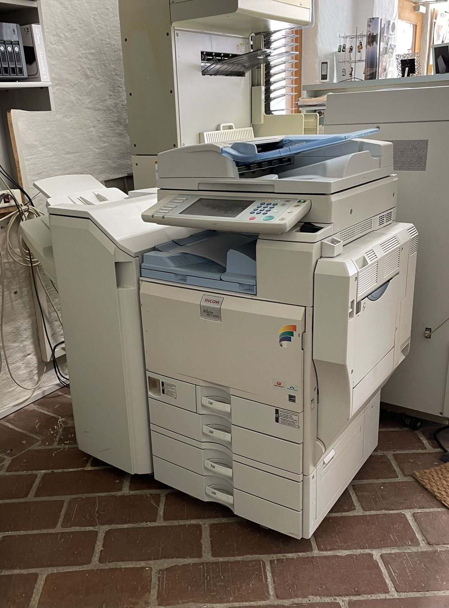
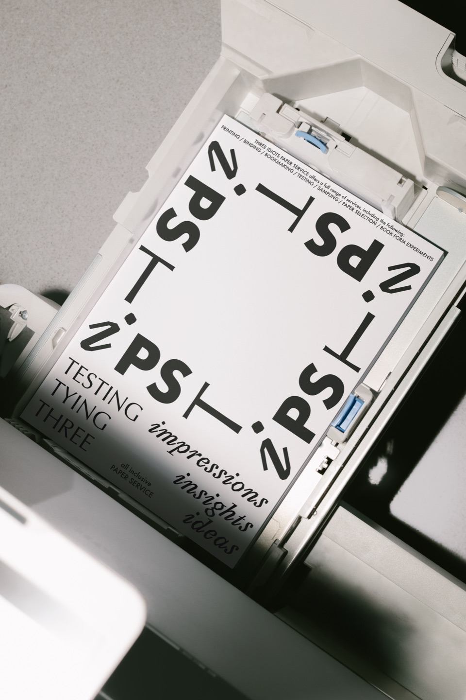
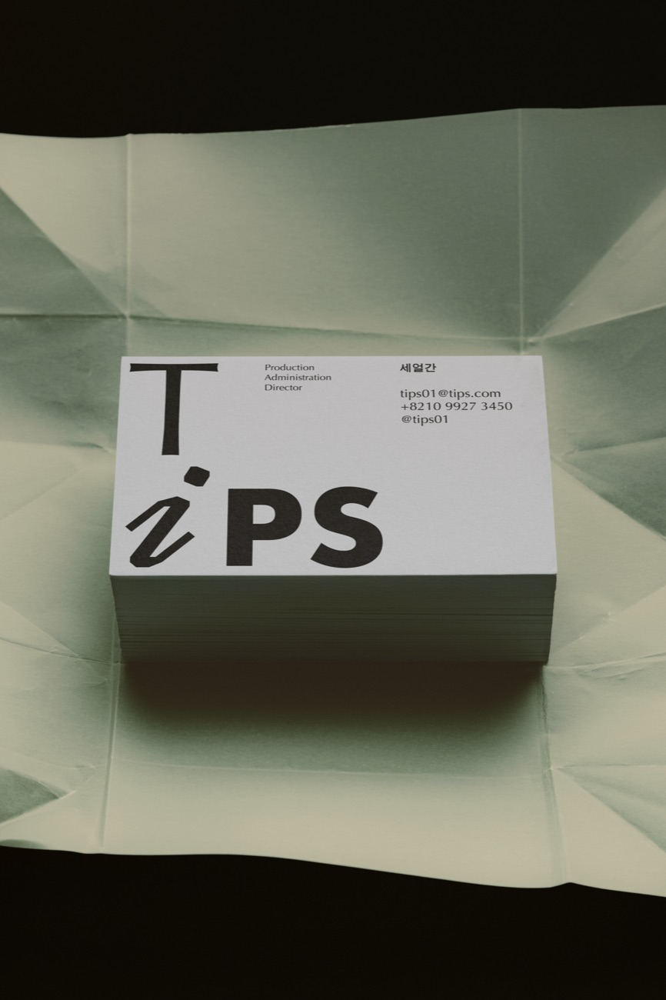
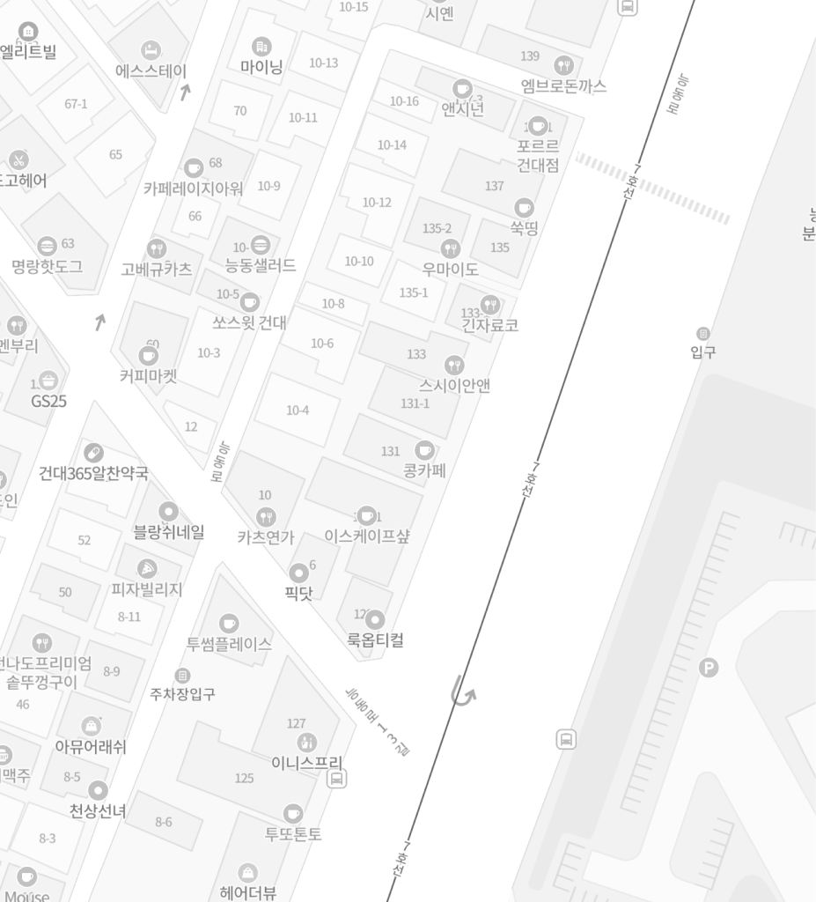
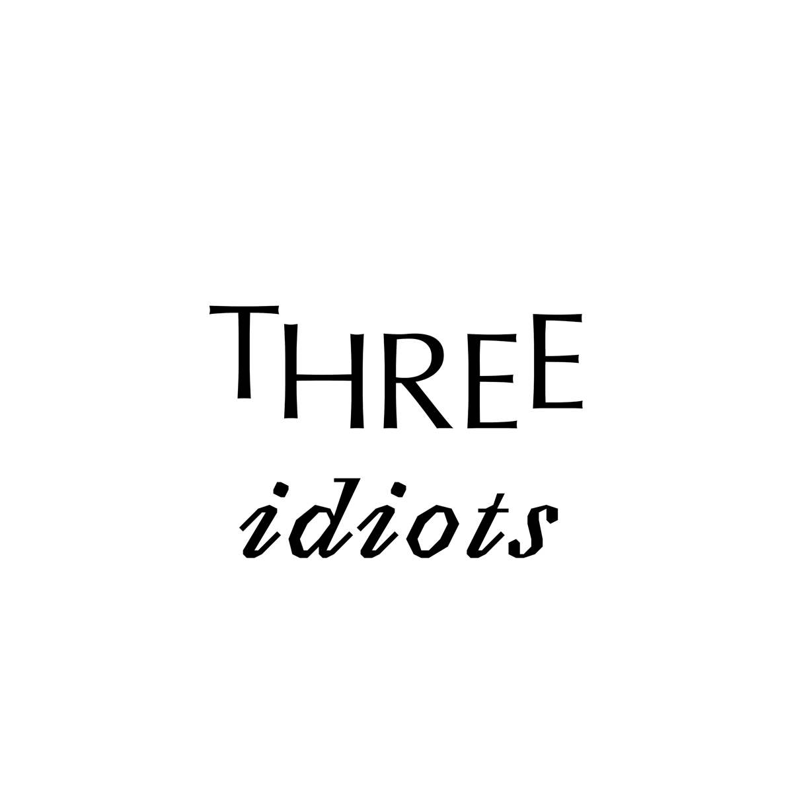

인쇄 앞에서는 우리 모두가 조금은 얼간이가 됩니다.
어떤 종이를 고를지, 어떤 방법으로 묶을지,
무엇을 물어봐야 할지 몰라 매번 묻고, 찾고, 다시 확인합니다.
팁스는 그 경험에서 시작합니다.
인쇄 앞에서 얼간이가 되는 사람들을 위해.
TESTING
impressions
THREE
ideas
Tips의 브랜드 가치
Experiment for Many Ways to
BIND PAPER
- TESTING impressions (인상의 실험)
- TYING insights (인사이트 엮기)
- THREE ideas (세 얼간이의 아이디어)
TiPS(Three Idiots Paper Service)는 낯설고 막막하게만 느껴지던 인쇄소에서의 경험을 능동적인 실험과 탐구의 장으로 탈바꿈시키는 개념적인 인쇄 브랜드입니다. "인쇄 앞에서는 우리 모두가 조금은 얼간이(idiots)가 된다"는 보편적인 공감대에서 출발한 이 프로젝트는, 사용자가 혼란스러움을 넘어 종이와 제본의 매력을 발견할 수 있도록 돕는 유저 중심의 인쇄 시스템을 구축합니다. 브랜딩, UX/UI, 편집 디자인, 그리고 공간 디자인을 통합하여, 기존 인쇄소의 한계를 극복하고 스토리텔링과 다채로운 프로그램이 중심이 되는 새로운 인쇄 문화를 제안합니다



Member
김한주
윤찬혁
함윤규
Contact
010.5215.7074 / donejuicy@gmail.com
010.8457.3450 / hamyunguu@gmail.com
010.9927.8455 / chauhynk@gmail.com
Location
서울 광진구 능동로 145 B1-2F, 05010
05010, B1-2F, 145 Neungdong-ro,
Gwangjin-gu, Seoul, South Korea


여기에 이미지를 끌어다 놓으면
바로 3D로 반영됩니다